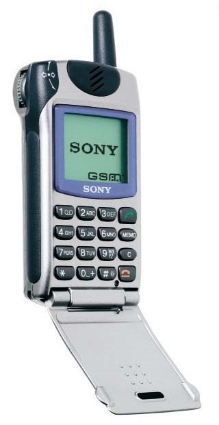
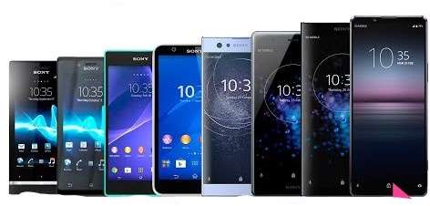
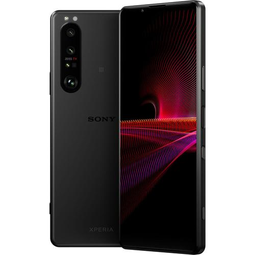

Sony
Mobile Communications Business Group, Sony Corporation and in short, Sony Mobile is a multinational telecommunications company founded on October 1, 2001 as a joint venture between Sony Group Corporation and Ericsson, headquartered in Tokyo, Japan and wholly owned by Sony. It was originally incorporated as Sony Ericsson Mobile Communications,[3] and headquartered in London, England, until Sony acquired Ericsson's share in the venture on February 16, 2012.[4] On April 1, 2021, Sony integrated its electronics businesses including Sony Mobile into one company called Sony Corporation.[5]
Prior to April 1, 2021, Sony Mobile exclusively created Android-powered smartphones under the Xperia sub-brand name; it also developed tablet computers (Sony Tablet), smartwatches (Sony SmartWatch) and fitness trackers (Sony SmartBand), alongside accessories and software for the devices.
2008


2021
